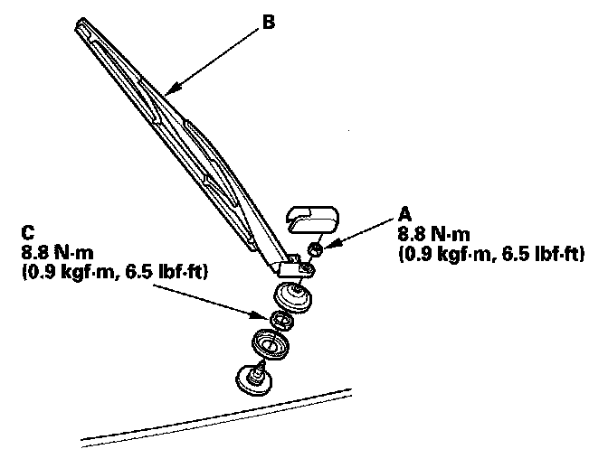
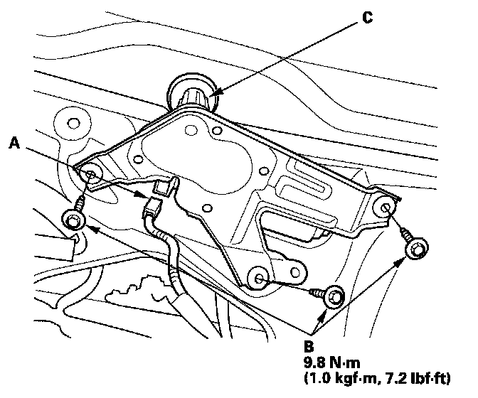

Rear Window Wiper Motor Replacement
Rear Window Wiper Motor Replacement1. Open the tailgate, and remove the tailgate lower trim panel.

2. Remove the mounting nut (A), the wiper arm (B) and the special nut (C).

3. Disconnect the 4P connector (A) and remove the three mounting bolts (B), then remove the rear window wiper motor (C).
4. Install in the reverse order of removal.